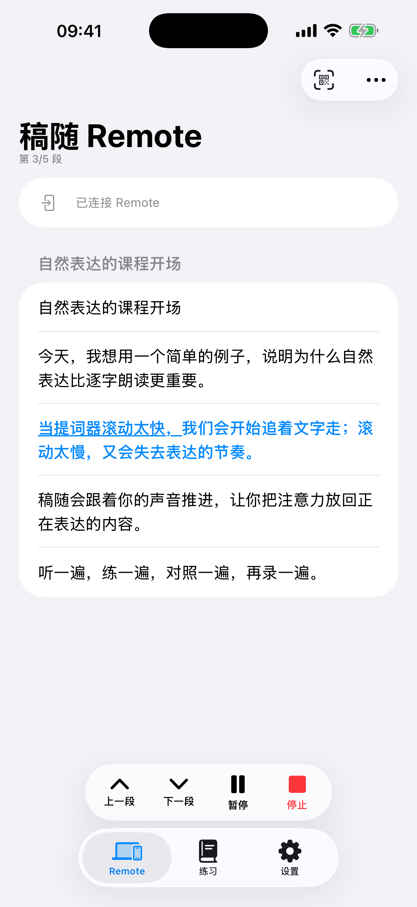

听一遍
让 Mac 系统朗读讲稿，开机前先听出内容在声音里的节奏与拗口长句。
为视频口播、在线录课与 Mac 演示而设计
将 Mac 悬浮提词窗贴在摄像头下方，搭配相机、OBS 或任意录屏工具实拍，并用 iPhone 与 Apple Watch 在镜头外无声调整段落。支持内置 Mac 屏幕、摄像头与音频录制接入同一工作流（即将发布）。
Mac 悬浮提词与多端遥控 · 内置屏幕与音频录制（即将发布）

核心亮点 · Voice Follow 语音跟随提词
传统匀速滚屏太快，你要追着文字赶；滚得太慢，你又要停下来等。一次停顿思考、一句临场发挥，或者一次口误重录，都会迫使你移开视线去寻找刚才讲到的位置。
稿随把这个过程变得更从容：将悬浮提词窗贴在摄像头下方，让声音带着讲稿前进，停顿时耐心等待，需要重来时回到上一句，拍完还能并排查看只读转录快速复盘。
听一遍 · 练一遍 · 跟着声音走 · 从容再来
让 Mac 系统朗读讲稿，开机前先听出内容在声音里的节奏与拗口长句。
在 iPhone 上离线语音练习，提前熟悉段落衔接与自己的表达方式。
在 Mac 上开启贴镜头 Voice Follow，讲稿配合你的自然语速实时推进。
重来时回到上一句，并排查看只读转录对照复盘，或用 Remote 在镜头外无声调整段落。
一个故事 · 三端自然配合
Mac 负责镜头旁的主要表达，iPhone 与免费的 Apple Watch 配套端让你在实拍节奏变化时无声调整段落。



三大视频录制场景
搭配相机与常用录屏软件实拍，或使用内置屏幕与人像录制（即将发布），都能稳住镜头眼神、顺畅完成每一条。
用微单、iPhone 连续互通相机或 OBS 拍摄口播时，把浮动提词窗紧贴摄像头正下方。你说快它跟快，停顿思考时不乱滚。
面对几十段课程长稿，开拍前先让系统声音朗读检查口语感，在 iPhone 上离线试讲；单遍结束后对照只读转录定位卡壳处。
支持在稿随内捕获全屏、单个窗口或选定区域，倒计时归零同步启动采集与提词推进，录完的多条 Take 自动归入对应讲稿文件夹。
即将发布的内置 Mac 录制与素材归档
把屏幕采集、人像画中画、按讲稿自动归档与成片交付连成闭环。内置屏幕、摄像头与音频录制及导出管理工作台即将发布。
支持全屏、单窗口、选定区域以及仅音频、仅摄像头模式；录制中暂停与恢复会自动剔除停顿区间。每条录制完成后立即存为本地独立 Take，无需等待导出即可重拍下一遍。

关联讲稿录制的每条 Take 会自动归入同名讲稿文件夹，支持将剪辑定稿的生产视频导入同一目录（标注“导入”徽章），通过全部 / 收藏 / 导入筛选、星标与备注对照源素材与成片；同时可非破坏性调整人像画中画、鼠标点击高亮并导出单一影片、分层素材包或同步 .srt 字幕。
支持显示器、应用窗口或自定义区域，按需组合系统声音、麦克风（可选 48 kHz / 24-bit Apple Lossless）与独立摄像头源。
录制素材自动按当前讲稿建夹归档；也可导入外部剪辑好的生产视频放在同一讲稿夹中加星标、写备注对照管理，从列表移除导入项绝不误删外部原文件。
支持裁切首尾、合成带人像视频或导出分层素材包，并基于录制原声或导入视频生成时间轴对齐的 SRT 字幕。
即将发布：内置屏幕、摄像头与音频录制及导出归档工作台即将随新版本发布；具体上线时间与最终权益以 App Store 页面为准。
方案与价格
Pro 覆盖日常语音跟随提词、语音练习与多端遥控；Ultra 在此基础上增加内置 Mac 屏幕、摄像头与音频录制及导出归档管理（即将发布）。
支持 Mac、iPhone 与 Apple Watch 的 Voice Follow 提词、语音练习与镜头外遥控（不包含内置屏幕录制）。
仅限语音跟随提词、语音练习与 Remote 等稿随核心功能，不包含内置屏幕录制；按月自动续期。
仅限语音跟随提词、语音练习与 Remote 等稿随核心功能，不包含内置屏幕录制；适合长期备稿与视频创作，按年自动续期。
即将发布 · 自动续期
包含全部 Pro 权益、内置 Mac 屏幕与音频录制、按讲稿归档的导出编辑器及符合资格时的 1 个月试用。
即将发布 · 一次性购买
一次购买永久解锁当前 Pro 与 Ultra 功能集，不自动续费。
Ultra 方案即将上架 App Store，最终价格、权益与试用资格以正式购买页面为准。Pro 符合条件的新订阅者可享 7 天试用；Apple 对同一订阅组仅提供一次入门优惠。
稿随无需注册应用账号。Voice Follow 与语音练习不会作为原始麦克风音频保存；内置录制（即将发布）仅将你主动拍摄或导入整理的音视频保存在本地 Mac，绝不上传至稿随服务器。